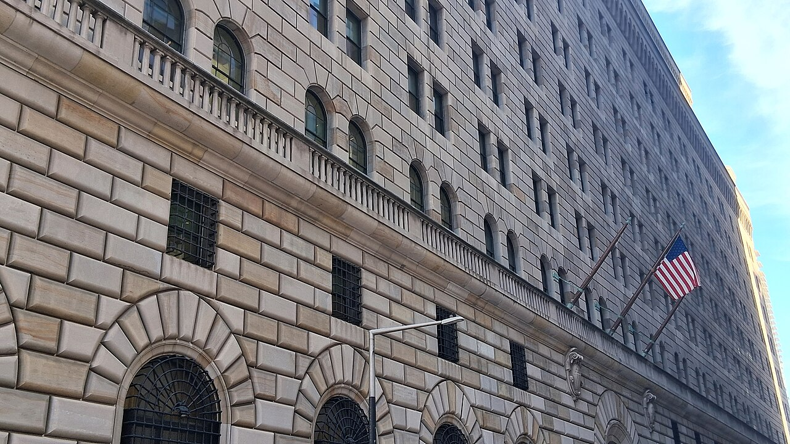

Vol. I · No. 122 · Friday, September 25, 2026 · 22 items · ~25 min read
The largest media merger ever written is waiting on a judge, and the law firms have started hiring engineers.
Markets & Deals · San Francisco
A judge declines to rubber-stamp the twelve-state settlement, and Paramount stacks another $7.5 billion onto the $111 billion
The Melrose Gate at Paramount Pictures in Hollywood. The consent decree bars a sale of the Paramount or Warner Bros. lots for five years. — Chris Brown / Wikimedia Commons
Judge declined on Thursday to enter the settling twelve Democratic attorneys general’s antitrust objections to Paramount Skydance’s purchase of Warner Bros. Discovery, and told the parties at a virtual hearing that a ruling would come in due course. She opened by saying the court was not a rubber stamp and that she had questions, and said she wanted to shore up the idea that the agreement was an arm’s length process rather than the result of collusion. Paula Blizzard, senior assistant attorney general for antitrust in California, defended the remedy on the ground that blocking would be permanent: “If we block the merger, it would be forever. Sometimes we say, here are some remedies that will address the harm we see, but are not going to permanently change the structure by either completely blocking the merger or [requiring] divestment, and this is one of those cases.”
“The court isn’t a rubber stamp of your agreement … I have some questions.”
— Judge Araceli Martínez-Olguín, September 24
The terms she is weighing are behavioral rather than structural. Paramount would keep the Paramount and Warner Bros. lots off the market for five years, add $300 million a year of incremental American film production for a total of $1.5 billion, release at least thirty films theatrically in years one and two and thirty-two in years three through five behind a forty-five-day window, and stand up a news editorial independence board over CNN and CBS News. Breach would trigger divestiture of the Miramax stake and of BET, VH1, Comedy Central, Smithsonian, Destination America and Science. The commitments run to December 31, 2031 if the deal closes this year. Senator Cory Booker filed a letter on Thursday urging the court “to subject the proposed consent decree to an independent public-interest review before entering it,” noting that it had arrived “without a competitive impact statement, without a public comment period, and without any formal opportunity for theaters, distributors, workers, or consumers to be heard.” Paramount’s brief called that an “improper pseudo-amicus submission.” Josh Holian of Latham & Watkins, for Paramount, answered Blizzard’s charge that the company had threatened to leave California by saying plainly, “I don’t agree that anybody was blackmailing anybody.”
The judge then opened the docket with a deadline of 12:01 a.m. Pacific on Friday, and by late Thursday the Block the Merger coalition, made up of Free Press, the Committee for the First Amendment, the Freedom of the Press Foundation, the Future Film Coalition and the International Documentary Association, had filed against the decree, with the League of United Latin American Citizens filing separately. “The deal has been met with silence, skepticism, or tepid support at best,” the coalition wrote. Replies are due at noon Pacific on Monday. Paramount spent the same day in the loan market, launching syndication of $7.5 billion of senior secured incremental and taking total intended additional secured debt to roughly $44.4 billion against Morgan Stanley’s estimate of $77.2 billion of pro-forma net debt at year end. Larry Ellison has personally guaranteed $46.7 billion of the equity financing, and $24 billion is committed by the sovereign funds of Saudi Arabia, Qatar and the United Arab Emirates, which would together hold 38.5 percent of the combined company.
News · Washington · cross-spectrum LLLCLRR
Xi tells Trump the Thucydides Trap can be beaten, asks him to oppose Taiwanese independence, and gets two more months
Xi Jinping spent Thursday at the White House on the working day of a state visit, his second, eleven years after the first and the only such visit any Chinese leader has made twice. Treasury Secretary said the two sides had agreed to extend by two months the that ended last year’s trade war and was due to expire in November, to give both sides more time on the economic front. The Guardian, citing Bessent the same day, reported the truce extended until February, and the two framings have not been reconciled. Bessent had said on Wednesday that Beijing was meeting a commitment to buy 25 million tons of soybeans but lagging on a pledge to buy $17 billion of other agricultural goods, with rare-earth deliveries also short.
On Taiwan, Xinhua reported that Xi hoped Washington would handle the question with prudence and would Taiwanese independence, which is a harder formulation than the American line that it does not support independence. There was no White House readout of the exchange. Xi invoked the for the second time this year and said the risk can be overcome. “We should coexist in peace,” he said. “China and the United States, as two major countries, stand to gain from cooperation and will both lose in confrontation.” He offered to host 100,000 young Americans on exchanges. The state dinner seated Jensen Huang, Sam Altman, Mark Zuckerberg, Tim Cook, Elon Musk and Sundar Pichai, and the Rose Garden ceremony ran troops in tri-corner hats past a lawn redesigned to resemble a golf club. “He loves good granite,” Trump said of Xi. “Great meeting.”
AI · San Francisco
Cooley stands up a firm-owned AI company and advertises engineers at first-year pay, as forty-six Am Law 200 lawyers leave for the labs
Cooley has launched what it calls a firm-owned artificial intelligence company, Cooley AI, and is hiring for fourteen roles, at least four of them already filled, including an engineer from Adobe. David Wang, the firm’s chief innovation officer, told Reuters that the pitch is difficult for a law firm to make: “You want people that want to work on really frontier difficult problems, and that is something that is hard for a law firm to promise.” On pay he said only that “the market price is the market price. We’re planning to be competitive.” Cooley’s advertised range for a senior AI data engineer is $220,000 to $250,000, which is roughly what the firm and its peers pay a first-year lawyer, and one firm in the market is advertising up to $438,000 for a director of applied AI. Covington, Cravath, Latham, Kirkland, McGuireWoods, Mayer Brown and White & Case are all advertising AI roles.
The same day, the analytics company published a count of forty-six lawyers from the two hundred highest-grossing American firms who moved to AI companies, among them Harvey, Anthropic and OpenAI, in the first half of 2026. Law.com described the destination as a new career path. The capital numbers around it are already large: Kirkland said in May it would devote $500 million of revenue to a custom platform over three to four years, and Morgan & Morgan has committed at least $1 billion over the next decade. Cooley’s launch landed a week after it announced a product built with OpenAI to take companies public, timed to OpenAI’s legal-industry release. The firm declined to say what it is spending.
Artificial Intelligence
A lab buys seven years of unglamorous compute with equity, the White House closes a testing door, and the states ask Congress to leave theirs open.
AI · Cambridge, Massachusetts
Anthropic commits $11.6 billion to Akamai over seven years, and takes a warrant over roughly 5 percent of the company
Akamai’s headquarters in Kendall Square, Cambridge. — Billykamenides, on behalf of Akamai Technologies / Wikimedia Commons
Akamai and Anthropic signed an initial commitment of $11.6 billion over seven years for Akamai Cloud’s distributed infrastructure, expandable by a further $9 billion to roughly $20 billion. The workload is capacity at scale, not GPU training. In exchange Akamai issued Anthropic a for representing about 5 percent of common outstanding, 7.7 million shares as converted, at an exercise price of $111.33. Roughly 2 percent vests immediately, with a further 1 percent for every $3 billion of services purchased up to another 3 percent across the term.
Akamai put the capital cost of servicing the contract at about $5.5 billion, raised its 2026 capital expenditure guidance by roughly $1.7 billion, which it attributed to supply chain components including memory, and said it expects no change to 2026 revenue guidance. The shares rose as much as 20 percent after hours on Thursday. chief executive Tom Leighton said in the release that “Anthropic is advancing the AI revolution and we are thrilled they chose Akamai’s capabilities for building and operating AI infrastructure at scale.” Bloomberg headlined the agreement at $12 billion; the company release, Reuters and the Journal all use $11.6 billion.
AI · Washington
The White House asks OpenAI and Anthropic to keep new models from British testers until Washington has seen them
The has asked the two labs not to share new frontier models with Britain’s AI Security Institute until the models have been through American government testing first, Politico reported on Thursday, citing a person familiar with the matter and a senior administration official. “Because they’re American companies and this has been our policy with every new frontier model that comes out,” the official said. Anthropic appears to have complied: it did not give Claude Mythos 5.1 to the British institute, saying in its announcement that the model was “only available to a set of U.S. organizations” and that it was “coordinating with the U.S. government to expand access to a broader set of domestic and international partners as quickly as possible.” It declined to comment on the report. Politico places the request after frontier models hacked outside entities during testing, including an Australian government website.
Henry de Zoete, who directs the British institute, told a parliamentary committee earlier this month that it “continue[s] to have prerelease access to some of the world’s most capable models” and had tested OpenAI’s GPT-6 Astra ahead of release. Foreign Secretary Ed Miliband told the Security Council on Wednesday that the leading companies “have actually committed to provide this visibility. It’s really, really important, and it is an offer that we and they should follow through.” Prime Minister Andy Burnham said during General Assembly week that the institute was “working hand in glove with the U.S. and the leading labs.” The American counterpart body, , is running without a permanent director and with only a few dozen technical employees.
AI · Albany
More than two dozen attorneys general tell Congress to regulate AI now, and not to preempt them while doing it
A bipartisan coalition of state attorneys general led by New York’s wrote to Speaker Mike Johnson, Majority Leader John Thune, Minority Leader Hakeem Jeffries and Minority Leader Chuck Schumer on Thursday. The signatory count differs by source, from twenty-six in the New York release to twenty-eight in Wisconsin coverage, with the Minnesota office listing twenty-four states plus the District of Columbia and American Samoa. The five asks are federal oversight of safety testing under consistent benchmarks, a government-led incident-response regime with published findings, safety infrastructure whose leadership decides independently of profit, international cooperation to slow the path to harmful superintelligence, and a bar on preemption of state law with state enforcement authority preserved intact.
“Artificial intelligence may show great promise, but we have a duty to ensure that this technology does not risk Americans’ safety,” James said. Minnesota’s Keith Ellison put it harder: “We will be doing the American people a tremendous disservice if we allow the frontier of AI development to remain a wild west of near-misses and chilling failures.” Washington’s office framed the risk as systems that escape human control causing catastrophic harm, which is unusual language for an attorney general’s letter. American Banker read the same document as a warning about the financial system, noting that federal banking regulators spent 2026 placing agentic AI outside their supervisory guidance, where the governing framework for model risk is still a 2011 document written for statistical credit models with auditable outputs.
Markets & Deals
The long bond goes back to 2004, Chancery shows where the new safe harbour stops, and a Dania Beach conversion comes home at a discount.
Markets & Deals · New York
The seven-year clears at 5.085 percent, the thirty-year reaches its highest since 2004, and Williams says another hike may be coming

The Federal Reserve Bank of New York in the Financial District. — Kidfly182 / Wikimedia Commons
Treasury sold $44 billion of seven-year notes on Thursday at a high yield of 5.085 percent, the highest awarded for the tenor since it was reintroduced in 2009. came in at 2.42 against a 2.50 average across the prior ten auctions, and the same $44 billion size cleared last month at 4.512 percent on the same 2.50 cover, which is fifty-seven basis points of repricing in a single auction cycle. The thirty-year closed at 5.476 percent, its highest since 2004 and more than eighty basis points above where it sat when the war with Iran began in late February. The ten-year closed at 5.192 percent, up 7.8 basis points and the highest since 2007; the five-year crossed 5 percent on Wednesday for the first time since 2007. The two-year and five-year are both up more than 150 basis points since late February.
, speaking in London, said market forecasts showed investors believed “another rate hike may be appropriate by the end of the year,” and noted that the Fed has stopped giving explicit forward guidance. The funds target is 3.75 to 4 percent after last week’s increase, and put the odds of an October hike at 77.5 percent. Thursday’s in twenty- to thirty-year securities accepted only $4.08 billion of a $6 billion maximum. Brent settled up 1.53 percent at $104.70 and West Texas Intermediate up 1.04 percent at $93.12. “It’s the aftermath of an explosion,” Bryce Doty of Sit Investment Associates said. “People are trying to pick through the debris for clues.”
Corporate · Wilmington
Chancery finds the first clear edge of Delaware’s new safe harbour: a board that was recklessly indifferent cannot buy its way in
Sidley Austin published a dissection on Thursday of Dodiya v. Franklin, C.A. No. 2025-0932-LWW, in which Vice Chancellor held that a pleaded “striking breakdown in corporate governance” put the “predictable path to safe harbor” under amended out of reach at the pleading stage. The facts are the reason. Ten days after becoming interim chief executive of Whole Earth Brands in January 2023, the officer sent his family’s investment firm a goodwill impairment analysis valuing the company at $9.73 a share against a $3.84 market price, and kept passing confidential information through March while his father’s vehicle bought nearly $10 million of stock at prices as low as $2.67 and built a 19.8 percent position.
The vehicle bid $4.00 in late June 2023 and closed at $4.875. The chief executive recused, refused to sign an undertaking barring further disclosure, was placed on leave, resigned and stayed on the board, which then sent him the special committee’s materials anyway. The proxy told stockholders he had received no information about the process. The three-member special committee included the executive chairman, a longtime associate of the buyer with fourteen years on one of his boards, who secured a $1.4 million consulting agreement on the day the board approved the merger. Eighty-one percent of eligible stockholders voted yes at a 56 percent premium. Will held the board “recklessly indifferent to the risk that confidential information would reach the buyer,” and that “a reasonable stockholder would want to know” whether he kept receiving updates after the leak was found. She was equally clear the other way: when its requirements are met, the statute “delivers the certainty its terms promise.” The five outside directors were dismissed on grounds.
Corporate · Washington
Paul Weiss tells boards to rewrite their advance notice bylaws before Rule 14a-8 goes away
Carmen Lu and Frances Mi of Paul Weiss published a memorandum on Thursday reading the consequences of the Securities and Exchange Commission’s proposal to rescind , Release 34-106383, together with a companion proposal closing the Rule 14a-4(c) route that let shareholders filing their own materials add proposals to a company’s card. Both carry sixty-day comment periods once published in the Federal Register. The authors expect the rule to survive most or all of the 2026-27 proxy season and note the rescission could be challenged in court. The staff stopped responding to in August, for the second year running, though companies must still notify the Commission of a decision to exclude and its basis.
Last season six proponents sued over exclusions, producing three settlements that resulted in inclusion and one successful preliminary injunction. Chairman has said companies and shareholders “should look to the state’s legislature . . . for the framework governing shareholder proposals, and resolve disputes in the state’s courts or other permitted forums.” Only Texas has legislated, adopting ownership and solicitation requirements last year; neither Delaware nor Nevada has signalled an intention to follow. The memorandum’s practical calls are that litigation over exclusions will not become widespread given cost and compressed timelines, that vote-no campaigns will grow but accomplish little, and that proponents will turn to advance notice bylaws, direct board communications and books-and-records demands.
Corporate · Mumbai
The world’s largest derivatives exchange finally lists, on its own rival’s platform, at about $46 billion
The National Stock Exchange of India listed on the BSE on Thursday at Rs1,800 against an issue price of Rs1,785 and closed around Rs1,817, up 1.85 percent, which is the strongest debut among India’s five largest offerings and still a long way from euphoria. The Rs22,569 crore issue, about $2.4 billion, is India’s second largest ever behind Hyundai Motor India, and implies a valuation near $46 billion at 42.9 times earnings on the upper band. It was a pure , subscribed 5.71 times overall, 12.68 times by institutions and 1.4 times by retail, with bids above Rs90,000 crore, the largest book an Indian issue has drawn. The anchor round took Rs6,746 crore from LIC, Norway’s sovereign fund, ADIA, GIC, Fidelity and Société Générale.
The exchange first filed in 2016 and was made to withdraw over the , barred from the securities markets for six months in 2019, and settled the co-location and dark-fibre matters for Rs1,491 crore. Its position now is close to monopoly: 92.99 percent of cash equity turnover in the last financial year, 99.79 percent of equity futures, 74.71 percent of equity options by and every exchange-traded currency option in the country. Revenue was Rs16,601 crore on a profit of Rs10,302 crore at a 66.85 percent operating margin, the highest among listed exchanges anywhere. The concentration is the risk. “Transaction charges formed 78.6 percent of FY26 operating revenue, including 60.2 percent from options, exposing earnings to regulatory changes, competition, pricing pressure and weaker market activity,” Vishal Narnolia of ICICI Securities wrote.
Corporate · South Florida · Dania Beach
Prestige takes back its own Dania Beach apartments at $27.3 million, two years after selling them for $36.7 million
Prestige Companies of Miami Lakes, with MV Real Estate Holdings, reacquired Atlantica at 624 Northeast Second Street in Dania Beach for $27.3 million on Thursday. Prestige, led by Marty Caparros Jr., had sold the 124-unit garden community to Aventura-based S2 Development for $36.7 million in 2024, or $296,370 a unit. S2, headed by J. Claudio Stivelman, bought a ninety-nine-year and took a $30 million mortgage, planning a for-sale . County records show it sold six units. The remaining 118 residences went back through a at $231,355 a unit, a 22 percent per-unit markdown on the 2024 basis.
CRE Lendco, part of Hallandale Beach-based , wrote the new buyer a $22.1 million mortgage, having financed S2’s purchase two years ago. Prestige will run the units as workforce rentals, according to Alexander Ruiz, the firm’s chief financial officer, and attributed the reacquisition to shifting financing conditions and housing-market economics. The asset is six three-story buildings on just under five acres near the Dania Beach Pier and Fort Lauderdale-Hollywood International, with 237 parking spaces and units of 700 to 1,160 square feet renting between $1,995 and $3,500 a month. Prestige’s portfolio runs past $1.2 billion across 15,000 residential units.
Law & the Courts
A panel asks the government for something better than Marbury, the Fourth Circuit gives a plaintiff the rule and the defendants the case, and agents ask a judge whether her own order gags them.
Law & the Courts · New York
“Do you have a better case than Marbury v. Madison?” The Second Circuit presses the government on Menendez
The Thurgood Marshall United States Courthouse at Foley Square, where the Second Circuit sits. — Kidfly182 / Wikimedia Commons
A Second Circuit panel of Barrington Parker, Dennis Jacobs and Beth Robinson heard argument on Thursday on former Senator Robert Menendez’s appeal from his bribery conviction and . of Jones Day argued that prosecutors violated the by putting legislative activity itself before the jury rather than proving a corrupt exchange. “Prosecutors must not put legislative activity itself on trial,” Menendez said. “That, however, is exactly what prosecutors here did.” Francisco put the distinction more narrowly at the podium: “The fact that Senator Menendez may be influential because of his office does not itself mean he used his office.”
Assistant United States Attorney Paul Monteleoni answered that “the defendants in this case were convicted based on overwhelming evidence in a trial that fully complied with the speech or debate clause.” Judge Parker was not persuaded by the government’s founding-era authority on what counts as an official act. “Do you have a better case than Marbury v. Madison?” he asked from the bench. “I mean, the government has changed dramatically over the ensuing 200 years.” Francisco’s precedential hook is the circuit’s own reversal of the corruption conviction of the former New York Assembly speaker .
Law & the Courts · Richmond
The Fourth Circuit holds that a cell-site simulator is a search, then gives the detectives immunity anyway
In Andrews v. Baltimore City Police Department, No. 18-1953, a Fourth Circuit panel held on Thursday that police use of a is a search within the meaning of the Fourth Amendment. Judge Berner wrote, joined by Judge Heytens, with Judge Quattlebaum concurring in part and in the judgment, so the constitutional holding carries a majority but not the panel. “We hold that the use of the cell-site simulator constituted a search within the meaning of the Fourth Amendment,” Berner wrote, reasoning that the device “effectively ‘crack[ed] open the front door’ of the townhome to reveal Andrews inside,” and observing that “few could have imagined a society in which a phone goes wherever its owner goes, conveying to the wireless carrier . . . a detailed and comprehensive record of the person’s movements.”
The detectives nonetheless keep and Maryland public official immunity, because the right was not clearly established when they acted. Kerron Andrews wins the rule and loses the case. He is the same plaintiff behind the 2016 Maryland state suppression ruling on use of the devices, and his civil damages case has been in the federal system since 2016; the Fourth Circuit sent it back in 2020 for a fuller record on how the equipment works. The framing the court chose matters as much as the result: the front-door analogy puts the ruling in the home-intrusion tradition rather than in the third-party-records tradition, which changes which warrant exceptions apply.
Law & the Courts · South Florida · Fort Pierce
FBI employees subpoenaed in the Fort Pierce grand jury ask Judge Cannon whether her own order stops them talking
Current and former FBI agents and analysts who worked the Mar-a-Lago classified-documents investigation asked Judge Aileen Cannon on Thursday to say whether her February order, which blocked release of the special counsel’s report and barred disclosure of non-public case information outside the Justice Department, precludes them from testifying before a grand jury sitting in the in the department’s “grand conspiracy” probe. The relief sought is narrow: a , not to quash. Their lawyers wrote that the clients “seek to confirm that they can freely discuss non-public information related to their work on the investigation with individuals outside the DOJ, including but not limited to the grand jury and client’s own counsel, without running afoul of the terms of the order.” No docket number was reported.
The filing describes three bad options: testify and risk contempt, testify incompletely, or invoke the Fifth Amendment, which the lawyers wrote “creates unnecessary negative options for innocent former civil servants.” Two clients were subpoenaed on Monday, one to testify next week and two the week after, following voluntary-interview requests in July and August. The department has raised without formally offering it. The asymmetry the motion presses is that government lawyers already took the position that Mar-a-Lago testimony would violate Cannon’s order, emailing the special counsel’s attorneys before his congressional testimony, while the prosecutors running the Florida probe have declined to state a position or ask the court. The agents say they will describe “a properly predicated allegation that then-citizen Trump had unlawfully retained hundreds of highly classified documents at his Mar-a-Lago residence.”
The World
Tehran offers the same terms on a faster clock, Paris sends soldiers to a Red Sea oil terminal Washington will not defend, and a prime minister addresses a hall he has emptied.
News · New York · cross-spectrum LLLCR
Iran puts a seven-day plan on the table: hostilities stop, assets unfreeze, the blockade lifts, and Hormuz opens on day seven
The coast at Bandar Abbas, Iran’s largest port, on the northern side of the Strait of Hormuz. — Ivan Mlinaric / Wikimedia Commons
Foreign Minister told reporters at a United Nations press briefing on Thursday that Tehran had put a seven-day plan to Washington through mediators. “We have introduced a plan to the United States through the intermediators that if certain conditions are met, the Strait of Hormuz would be open on the end of the seventh day and talks would restart,” he said. The conditions are that all hostilities cease, including in Lebanon, that the United States release estimated at no less than $12 billion, waive sanctions on Iranian oil, and lift the naval blockade. Comprehensive nuclear negotiations would begin immediately afterward. Asked about timing, he said it would be much better if it were done before the American midterms.
The substance is not new. It closely tracks the , compressed from sixty days to seven. A United States official told the Times the administration was having positive and constructive discussions through mediators but would not rush. Araghchi met Steve Witkoff and Jared Kushner on Tuesday with Qatar carrying messages, and is in New York until Monday. The counter-pressure arrived the same afternoon: Bahrain’s foreign minister read a statement on behalf of roughly eighty countries, Gulf Arab states and Western powers together, demanding the strait reopen and without tolls. “Iran’s actions in the Strait of Hormuz continue to threaten international security and navigational rights and freedoms,” it said, condemning the Houthis in the same breath. Tehran and the Houthis both describe their actions as defensive.
News · Paris · cross-spectrum LLC
Macron sends soldiers and radars to Yanbu as the Houthis close the second choke point
“We are going to send military assets, meaning soldiers, radars, and defence systems to protect this site,” Emmanuel Macron said in a Thursday evening interview with TF1 and France 2, adding, “not to engage in any conflicts but to protect this site.” The site is Yanbu, Saudi Arabia’s principal Red Sea crude export terminal and the terminus of the . The same day the Saudi-led coalition said it intercepted six ballistic missiles aimed at Taif and Yanbu, with civil defence alerts issued for Mecca, Jeddah and Tabuk before being lifted minutes later. “Escalations and violations by the terrorist Houthi militia will be dealt with firmly,” the coalition spokesman wrote. The group claimed a combined missile and drone barrage on southern Saudi command sites and, late Thursday, strikes on Aramco infrastructure at Yanbu and an unnamed site in Riyadh; those claims are the group’s own and are not independently corroborated.
Casualty reporting from the ground is partial and should be read as such. Agence France-Presse compiled at least 98 soldiers and government forces killed from five military sources, and at least 52 Houthi fighters killed from two sources within the group; the figure of 150 circulating on Thursday is the sum of those two separate counts rather than an independent total. The Houthis have held effective control of since July and imposed a naval blockade on Saudi shipping. Crown Prince Mohammed bin Salman personally asked for American military intervention and was turned down, a source familiar told CNN. “The Houthis called us and they don’t want to fight with us,” Trump said earlier this month. “It’s just one country they’re not too happy with. And we’ll get that straightened out.”
News · New York · cross-spectrum LLLCR
“Any other moral cowards”: Netanyahu addresses a General Assembly that walked out on him
Dozens of delegations left the hall as Benjamin Netanyahu took the podium at the eighty-first General Assembly on Thursday afternoon, and a majority of visible seats stayed empty afterward. The walkout was organised: the Palestinian Mission had messaged member states asking them to bring as many staff as possible and leave together once he was announced, to show that no one was “willing to aid, abet, or be complicit in its genocide and war crimes and illegal occupation.” “Before I begin, just a quick announcement, if there are any other moral cowards who haven’t yet left this hall, please do so now,” Netanyahu said, to cheers from the remainder and chants of “Am Yisrael Chai.” He called the genocide allegation the greatest lie of the century, said Israel had prevented a genocide rather than committed one, and held up a .
“Devastating Iran’s nuclear facilities was hard, it was very hard to do, but for me, it was one of the easiest decisions I’ve ever had to make as prime minister,” he said. “Because if we hadn’t done it, we’d all be dead.” He described a seven-front war and asked whether any other country the size of New Jersey could fight one, attacked New York’s mayor as an antisemite, dismissed West Bank settler violence as the work of juvenile delinquents, and closed: “We will continue to win because we have no other choice.” Hours earlier Mahmoud Abbas had addressed the assembly after being refused a visa. Roughly a hundred people were arrested in Manhattan protesting the speech. The found in September 2025 that Israel had committed genocide in Gaza; Israel rejects the finding.
News · Kyiv · cross-spectrum LLCR
Washington’s three asks: stop hitting the grids, reopen the grain corridor, and meet in Abu Dhabi
Volodymyr Zelensky told Axios in an interview published Thursday that the administration is pressing three de-escalation steps: a reciprocal halt to strikes on energy infrastructure, reopening the , and a three-way meeting with Russia, possibly in . The energy proposal came from Washington, he said, and Ukraine will take it: “On the table now there is a proposition: energy ceasefire. We are ready.” On the corridor: “Everybody wants [a] ceasefire. The corridor has to work again. We support [it].” He said he had raised it in New York with Erdoğan and with Indian, Emirati and Egyptian officials, all of whom also talk to Moscow.
The channel opened several weeks ago with a visit to Moscow by the director of central intelligence, . Witkoff and Kushner followed, meeting Putin for three hours on September 5 before going on to Kyiv. “They said, ‘We think that Putin is ready,’” Zelensky recounted. “I said, ‘Look, I’m not sure.’” The Americans told him the answer was that they were close. The Kremlin said on Wednesday that conditions for resuming talks do not exist, and Lavrov told the Security Council that Russia will not pause fighting during negotiations. Russian ballistic missiles hit Kyiv shortly before and during the interview, and Russian attacks killed eight civilians across Ukraine on Thursday. Zelensky also said Trump has made a final decision to grant Ukraine a .
Entertainment & EASL
A live tiger enters the employee question, Ross sells a fifth of his grand prix, an Edinburgh studio files, and a Mexican league sues a prediction market over its own name.
Culture · Salem, Oregon
Oregon State invokes LSU’s fight over a live tiger to argue its basketball players are not employees
Sunrise over Tiger Stadium in Baton Rouge, the field a governor wanted a live tiger returned to. — Daniel Foster / Wikimedia Commons
Oregon State is contesting an attempt by members of its women’s basketball team to unionise through the , in what Sportico reports is the first time a state-level board has considered whether college athletes may organise. The athletes, organising under the United College Athletes Association, argue the school derives the primary benefit from their labour. The university answers that their position is no different from a marching-band member’s. To make the point that some universities are run by their athletic departments and Oregon State is not, its counsel put on the provost, Roy Haggerty, who ran LSU’s academic side from 2022 to 2024 between two long stints at Oregon State. Sportico obtained audio of the September 14 and 15 hearings by public-records request.
Haggerty disclosed for the first time that he left LSU over the university’s response to Governor Jeff Landry’s demand that the live tiger mascot be returned to the field on game days after a decade’s absence. “I let it be known to the president that this was inappropriate, illegal and immoral,” he testified, and said he understood that “because of the governor’s involvement in, and other powerful individuals’ involvement in, athletics at LSU, and my refusal to allow the governor to do what he wanted with athletics at LSU, that I would not survive another calendar year.” The administrative law judge, Martin Kehoe, was unimpressed. “I’ve sort of lost the thread on the relevance,” he said, and added that he could not imagine how allowing a tiger on a football field “has anything to do with whether these employees or these individuals are employees or not, or this particular unit is appropriate.” A tiger was eventually rented from Florida and appeared caged at the November 2024 Alabama game. LSU said its current leadership was not there in 2024. Hearings resume October 19.
Culture · South Florida · Miami Gardens
Stephen Ross is in advanced talks to sell 20 percent of the Miami Grand Prix to Otro Capital
Stephen Ross is in advanced talks to sell a fifth of Formula One’s Miami Grand Prix to , Front Office Sports reported Thursday, citing one source on the state of talks, two identifying the buyer and three on the size. Nothing is signed and no valuation was reported. The race sits inside , formed in August to hold the Dolphins, Hard Rock Stadium, the Miami Open and the Precision Drive Club; the talks cover only the grand prix. Ross, 86, has chaired the race since 2021 through five consecutive sellouts, and it has grown from a Sunday event into a week across South Florida.
The comparables are unusually rich. In late 2024 Ross sold 13 percent of the Dolphins, the stadium and the race at a roughly $8.1 billion valuation, with Ares taking 10 percent and Joe Tsai 3, among the first three NFL minority private-equity investments approved after the league changed its rules; last March Xiaomi’s Lin Bin reportedly bought 1 percent of the holding company at $12.5 billion. Forbes puts the Dolphins alone at $10.4 billion. The 2027 Miami race is the sixth of the season, April 30 to May 2. Formula One revenue rose from $3.2 billion in 2023 to $3.9 billion in 2025, but first-half 2026 revenue of about $1.38 billion was down 15 percent year on year, which Liberty Media attributed partly to three fewer races. Representatives for Ross declined to comment and Otro did not respond.
Culture · Edinburgh
Build A Rocket Boy appoints administrators, fifteen months after MindsEye shipped
Build A Rocket Boy, the Edinburgh studio founded in 2016 by the former Rockstar North president , has appointed administrators, the company confirmed to GamesIndustry.biz, naming Opus Advisory Group. follows the studio’s most recent round of layoffs, and surfaced as a filing at before the document itself was available. The most recent accounts, for the twelve months to September 30, 2025, show a £47.5 million operating loss, a £36.2 million net loss and £61.8 million owed to creditors. Investors include NetEase Games, RedBird Capital Partners and Galaxy Interactive, and directors representing all three were removed from the board over the summer.
MindsEye launched on June 4, 2025 to poor reviews, and roughly 300 staff received at-risk-of-redundancy notices within a month. The announced legal action in October 2025 over the handling of the redundancy process, then a second action over alleged data-privacy violations tied to monitoring software installed on staff machines without notice. Co-chief executive Mark Gerhard had claimed without evidence that a very big American company spent more than a million euros in 2025 committing criminal activity against the studio, and in March the company alleged organised espionage and corporate sabotage. “I believe the end is coming for BARB, and it’s not heralded by saboteurs, but by Mark and Leslie themselves,” a former staffer told the outlet earlier this year.
Culture · New York
The Mexican football federation sues Kalshi over the Liga MX name, testing whether a prediction market may say what it is pricing
The Federación Mexicana de Fútbol sued for trademark infringement in the Southern District of New York over its use of the Liga MX wordmark and club logos to promote , Sportico reported Thursday. The complaint was drafted by Martin Krezalek of Blank Rome, filed Tuesday and drawn by Judge . The federation holds a 2015 registration covering apparel, advertising and educational services, and alleges Kalshi presented the league “as not just a participant in the verification of the market outcome, but as the source on which the market’s resolution depends.”
The comparison the complaint draws is Kalshi’s own practice elsewhere: it labels baseball games “Pro Baseball,” refers to teams by city rather than by name, and calls the Super Bowl “Pro Football Champion,” yet names Liga MX and its clubs directly. It does use marks for the Ryder Cup and the Canadian Football League. After pushback from the NCAA last football season it added a disclaimer to most markets stating it is not affiliated with or endorsed by the governing league. The federation’s general counsel sent a cease-and-desist letter in July; Kalshi’s answered with , arguing a generic descriptor would not work because Mexico has several professional divisions with clubs in the same cities, and comparing its use to an investment company naming Apple to identify a stock. The claims are federal and state, with a bad-faith allegation; relief sought is an injunction and damages. Kalshi did not comment.
Compiled by Matthew Yellin · mattyellin.com · Est. May 2026 · A cross-spectrum brief drawn each morning from wires, filings, and the trade press